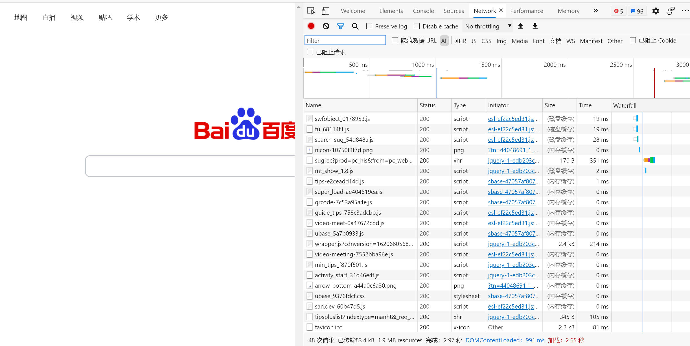
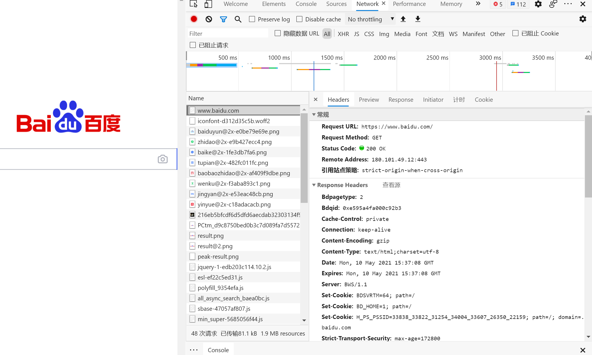
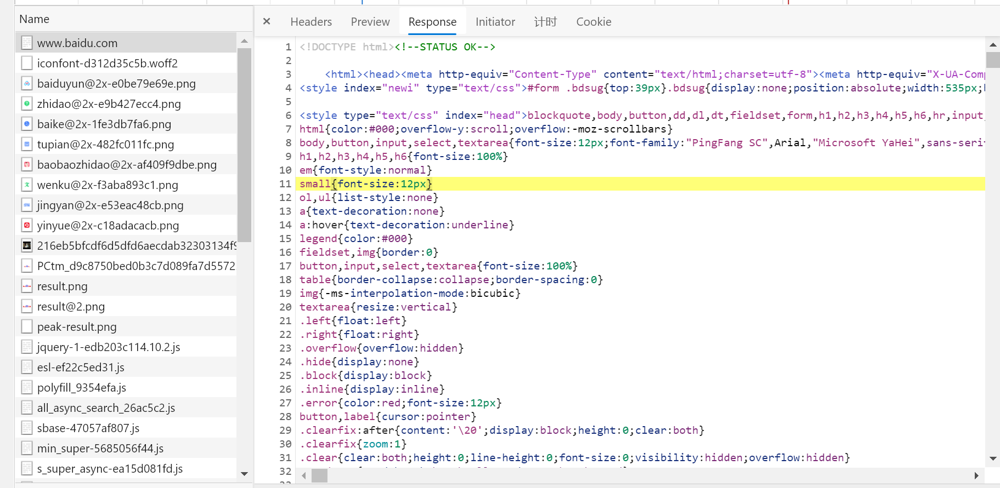

HTTP基本原理
本文最后更新于：2021年6月15日 上午
URI和URL
URI （Uniform Resource Identifier） 即统一资源标志符。URL （Uniform Resource Locator 即统一资源定位符。
例如：https://github.com/favicon.ico既是一个URL，也是一个URI。用URL/URI来唯一指定了它的访问方式，这其中包括了访问协议Https，访问路径（即根目录）和资源名称favicon.ico。
URL是URI的一个子集，也就是每个URL都是URI，但不是每个URI都是URL。
URI还包括一个子类叫做URN（Universal Resource Name）即统一资源名称。但是在目前的互联网，URN的使用非常少，几乎所有的 URI都是URL，所以一般的网页链接我们可以称之为 URL，也可以称之为 URI。
超文本
Hypertext，我们在浏览器里看到的网页就是超文本解析而成的，其网页源代码是一系列 HTML代码，里面包含了一系列标签，比如img显示图片，p指定显示段落等。浏览器解析这些标签后，便形成了我们平常看到的网页，而网页的源代码HTML就可以称作超文本。
HTTP和HTTPS
HTTP的全称是Hyper Text Transfer Protocol，中文名叫作超文本传输协议，HTTP协议是用于从网络传输超文本数据到本地浏览器的传送协议，它能保证高效而准确地传送超文本文档。HTTP由万维网协会（World Wide Web Consortium）和Internet工作小组IETF（Internet EngineeringTask Force）共同合作制定的规范，目前广泛使用的是HTTP 1.1版本。
HTTPS的全称是Hyper Text Transfer Protocol over Secure Socket Layer，是以安全为目标HTTP通道，简单讲是HTTP的安全版，即HTTP下加入SSL层，简称为HTTPS。
HTTPS的安全基础是SSL，因此通过它传输的内容都是经过SSL加密的，它的主要作用可以分为两种：
- 建立一个信息安全通道，来保证数据传输的安全。
- 确认网站的真实性，凡是使用了HTTPS的网站，都可以通过点击浏览器地址栏的锁头标志来查看网站认证之后的真实信息，也可以通过
CA机构颁发的安全签章来查询。
现在越来越多的网站和 App 都已经向 HTTPS 方向发展。例如：
- 苹果公司强制所有 iOS App 在 2017 年 1 月 1 日 前全部改为使用 HTTPS 加密，否则 App 就无法在应用商店上架。
- 谷歌从 2017 年 1 月推出的 Chrome 56 开始，对未进行 HTTPS 加密的网址链接亮出风险提示，即在地址栏的显著位置提醒用户 “此网页不安全”。
- 腾讯微信小程序的官方需求文档要求后台使用 HTTPS 请求进行网络通信，不满足条件的域名和协议无法请求。
因此，HTTPS 已经已经是大势所趋。
HTTP请求过程
我们在浏览器中输入一个URL，回车之后便可以在浏览器中观察到页面内容。实际上，这个过程是浏览器向网站所在的服务器发送了一个请求，网站服务器接收到这个请求后进行处理和解析，然后返回对应的响应，接着传回给浏览器。响应里包含了页面的源代码等内容，浏览器再对其进行解析，便将网页呈现了出来，传输模型如图所示：

此处客户端即代表我们自己的 PC 或手机浏览器，服务器即要访问的网站所在的服务器。
为了更直观地说明这个过程，这里用浏览器的开发者模式下的Network监听组件来做演示，它可以显示访问当前请求网页时发生的所有网络请求和响应。打开浏览器（Chrome或Edge都可以），右击并选择 “检查”项，即可打开浏览器的开发者工具。这里访问百度http://www.baidu.com/，输入该 URL后回车，观察这个过程中发生了怎样的网络请求。可以看到，在Network页面下方 出现了一个个的条目，其中一个条目就代表一次发送请求和接收响应的过程，如图所示:

我们先观察第一个网络请求，即www.baidu.com，其中各列的含义如下。
- 第一列
Name：请求的名称，一般会将 URL的最后一部分内容当作名称。 - 第二列
Status：响应的状态码，这里显示为200，代表响应是正常的。通过状态码，我们可以判断发送了请求之后是否得到了正常的响应。 - 第三列
Type：请求的文档类型。这里为document，代表我们这次请求的是一个 HTML文档，内容就是一些 HTML代码。 - 第四列
Initiator：请求源。用来标记请求是由哪个对象或进程发起的。 - 第五列
Size：从服务器下载的文件和请求的资源大小。如果是从缓存中取得的资源，则该列会显示 fromcache。 - 第六列
Time：发起请求到获取响应所用的总时间。 - 第七列
Waterfall：网络请求的可视化瀑布流。 我们点击这个条目即可看到其更详细的信息，如图所示。

首先是General部分，Request URL为请求的URL，Request Method为请求的方法，Status Code为响应状态码，Remote Address为远程服务器的地址和端口，Referrer Policy为 Referrer判别策略。
再继续往下，可以看到，有Response Headers和Request Headers，这分别代表响应头和请求头。请求头里带有许多请求信息，例如浏览器标识、Cookies、Host等信息，这是请求的一部分，服务器会根据请求头内的信息判断请求是否合法，进而作出对应的响应。图中看到的Response Headers就是响应的一部分，例如其中包含了服务器的类型、文档类型、日期等信息，浏览器接受到响应后，会解析响应内容，进而呈现网页内容。
请求
请求，由客户端向服务端发出，可以分为4部分内容：请求方法（Request Method、请求的网址（Request URL）、请求头（Request Headers）、请求体（Request Body）。
请求方法
常见的请求方法有两种：GET和POST。 在浏览器中直接输入URL并回车，这便发起了一个GET请求，请求的参数会直接包含到URL里。例如，在百度中搜索Python，这就是一个GET请求，链接为https://www.baidu.com/s?wd=Python，其中URL中包 含了请求的参数信息，这里参数wd表示要搜寻的关键字。POST请求大多在表单提交时发起。比如，对于一个登录表单，输入用户名和密码后，点击“登录”按钮，这通常会发起一个POST请求，其数据通常 以表单的形式传输，而不会体现在URL中。
GET和POST请求方法有如下区别。
GET请求中的参数包含在URL里面，数据可以在URL中看到，而POST请求的URL不会包含这些数据，数据都是通过表单形式传输的，会包含在请求体中。GET请求提交的数据最多只有1024字节，而POST请求没有限制。 一般来说，登录时，需要提交用户名和密码，其中包含了敏感信息，使用GET方式请求的话，密码就会暴露在URL里面，造成密码泄露，所以这里最好以POST方式发送。上传文件时，由于文件内容比较大，也会选用POST方式。 我们平常遇到的绝大部分请求都是GET或POST请求，另外还有一些请求方法，如HEAD、PUT、DELETE、OPTIONS、CONNECT、TRACE等，我们简单将其总结为下表。
| 方法 | 描述 |
|---|---|
| GET | 请求页面，并返回页面内容 |
| HEAD | 类似于GET请求，只不过返回的响应中没有具体的内容，用于获取报头 |
| POST | 大多用于表单提交或上传文件，数据包含在请求体中 |
| PUT | 从客户端向服务器传送的数据取代指定文档中的内容 |
| DELETE | 请求服务器删除指定的页面 |
| CONNECT | 把服务器当作跳板，让服务器代替客户端访问其他网页 |
| OPTIONS | 允许客户端查看服务器的性能 |
| TRACE | 回显服务器收到的请求，主要用于测试或诊断 |
请求的网址，即统一资源定位符 URL，它可以唯一确定我们想请求的资源。
请求头
请求头，用来说明服务器要使用的附加信息，比较重要的信息有Cookie、Referer、User-Agent等。下面简要说明一些常用的头信息。
Accept：请求报头域，用于指定客户端可接受哪些类型的信息。Accept-Language：指定客户端可接受的语言类型。Accept-Encoding：指定客户端可接受的内容编码。Host：用于指定请求资源的主机IP和端口号，其内容为请求URL的原始服务器或网关的位置。从 HTTP 1.1 版本开始，请求必须包含此内容。Cookie：也常用复数形式Cookies，这是网站为了辨别用户进行会话跟踪而存储在用户本地的数据。它的主要功能是维持当前访问会话。例如，我们输入用户名和密码成功登录某个网站后，服务器会用会 话保存登录状态信息，后面我们每次刷新或请求该站点的其他页面时，会发现都是登录状态，这就是Cookies的功劳。Cookies里有信息标识了我们所对应的服务器的会话，每次浏览器在请求该站点的页 面时，都会在请求头中加上Cookies并将其发送给服务器，服务器通过Cookies识别出是我们自己，并且查出当前状态是登录状态，所以返回结果就是登录之后才能看到的网页内容。Referer：此内容用来标识这个请求是从哪个页面发过来的，服务器可以拿到这一信息并做相应的处理，如做来源统计、防盗链处理等。User-Agent：简称UA，它是一个特殊的字符串头，可以使服务器识别客户使用的操作系统及版本、浏览器及版本等信息。在做爬虫时加上此信息，可以伪装为浏览器；如果不加，很可能会被识别出为爬虫。Content-Type：也叫互联网媒体类型（Internet Media Type）或者MIME类型，在HTTP协议消息头中，它用来表示具体请求中的媒体类型信息。例如，text/html代表HTML格式，image/gif代表GIF图片，application/json代表JSON类型，更多对应关系可以查看此对照表：http://tool.oschina.net/commons。
因此，请求头是请求的重要组成部分，在写爬虫时，大部分情况下都需要设定请求头。
请求体
请请求体一般承载的内容是POST请求中的表单数据，而对于GET请求，请求体则为空。
登录之前，我们填写了用户名和密码信息，提交时这些内容就会以表单数据的形式提交给服务器，此时需要注意Request Headers中指定Content-Type为application/x-www-form-urlencoded。只有设置Content-Type为application/x-www-form-urlencoded，才会以表单数据的形式提交。另外，我们也可以将Content-Type设置为application/json来提交JSON数据，或者设置为multipart/form-data来上传文件。
表格中列出了Content-Type和POST提交数据方式的关系。
| Content-Type | 提交数据的方式 |
|---|---|
| application/x-www-form-urlencodeed | 表单数据 |
| multipart/form-data | 表单文件上传 |
| application/json | 序列化JSON数据 |
| text/xml | XML数据 |
在爬虫中，如果要构造POST请求，需要使用正确的Content-Type，并了解各种请求库的各个参数设置时使用的是哪种Content-Type，不然可能会导致POST提交后无法正常响应。
响应
响应，由服务端返回给客户端，可以分为三部分：响应状态码（Response Status Code）、响应头（Response Headers）和响应体（Response Body）。
响应状态码
响应状态码表示服务器的响应状态，如200代表服务器正常响应，404代表页面未找到，500代表服务器内部发生错误。在爬虫中，我们可以根据状态码来判断服务器响应状态，如状态码为200，则证明成功返 回数据，再进行进一步的处理，否则直接忽略。下表列出了常见的错误代码及错误原因。
| 状态码 | 说明 | 详情 |
|---|---|---|
| 100 | 继续 | 请求者应当继续提出请求，服务器已收到请求的一部分，正在等待其余部分 |
| 101 | 切换协议 | 请求者已要求服务器切换协议，服务器已确认并确认切换 |
| 200 | 成功 | 服务器已成功处理了请求 |
| 201 | 已创建 | 请求成功并且服务器创建了新的资源 |
| 202 | 已接受 | 服务器已接受请求，但尚未处理 |
| 203 | 非授权信息 | 服务器已经成功处理请求，但返回的信息可能来自另一个源 |
| 204 | 无内容 | 服务器成功处理了请求，但没有返回任何内容 |
| 205 | 重置内容 | 服务器成功处理了请求，但内容被重置 |
| 206 | 部分内容 | 服务器成功处理了部分请求 |
| 300 | 多种选择 | 针对请求，服务器可执行多种操作 |
| 301 | 永久移动 | 请求的网页已永久移动到新位置，即永久重定向 |
| 302 | 临时移动 | 请求的网页暂时跳转到其他页面，即暂时重定向 |
| 303 | 查看其他位置 | 如果原来的请求是POST，重定向目标文档应当通过GET方式访问资源 |
| 304 | 未修改 | 此次请求返回的网页未修改，继续使用上次的资源 |
| 305 | 使用代理 | 请求者应该使用代理访问该网页 |
| 307 | 临时重定向 | 请求的资源临时从其他位置响应 |
| 400 | 错误请求 | 服务器无法解析该请求 |
| 401 | 未授权 | 请求没有进行身份验证或验证未通过 |
| 403 | 禁止访问 | 服务器拒绝此请求 |
| 404 | 未找到 | 服务器找不到请求的网页 |
| 405 | 方法禁用 | 服务器禁用了请求中指定的方法 |
| 406 | 不接受 | 无法使用请求的内容响应请求的网页 |
| 407 | 需要代理授权 | 请求者需要使用代理授权 |
| 408 | 请求超时 | 服务器请求超时 |
| 409 | 冲突 | 服务器在完成请求时发生冲突 |
| 410 | 已删除 | 请求的资源已永久删除 |
| 411 | 需要有效长度 | 服务器不接受不含有效内容长度标头字段的请求 |
| 412 | 未满足前提条件 | 服务器未满足请求者在请求中设置的其中一个前提条件 |
| 413 | 请求实体过大 | 请求实体过大，超出服务器的处理能力 |
| 415 | 请求URL过长 | 请求的网址过长，服务器无法处理 |
| 416 | 请求范围不符 | 页面无法提供请求页面支持 |
| 417 | 未满足期望值 | 服务器为满足期望请求标头字段的要求 |
| 500 | 服务器内部错误 | 服务器遇到错误，无法完成请求 |
| 501 | 未实现 | 服务器不具备完成请求的功能 |
| 502 | 错误网关 | 服务器作为网关或代理，从上游服务器收到无效响应 |
| 503 | 服务不可用 | 服务器目前无法使用 |
| 504 | 网关超时 | 服务器作为网关或代理，但是没有及时从上游服务器收到响应 |
| 505 | HTTP版本不支持 | 服务器不支持请求中所用的HTTP协议版本 |
响应头包含了服务器对请求的应答信息，如Content-Type、Server、Set-Cookie等。下面简要说明一些常用的响应头信息。
Date：标识响应产生的时间。Last-Modified：指定资源的最后修改时间。Content-Encoding：指定响应内容的编码。Server：包含服务器的信息，比如名称、版本号等。Content-Type：文档类型，指定返回的数据类型是什么，如text/html代表返回HTML文档，application/x-javascript则代表返回JavaScript文件，image/jpeg则代表返回图片。Set-Cookie：设置Cookies。响应头中的Set-Cookie告诉浏览器需要将此内容放在Cookies中，下次请求携带Cookies请求。Expires：指定响应的过期时间，可以使代理服务器或浏览器将加载的内容更新到缓存中。如果再次访问时，就可以直接从缓存中加载，降低服务器负载，缩短加载时间。
响应体
最重要的当属响应体的内容了。响应的正文数据都在响应体中，比如请求网页时，它的响应体就是网页的HTML代码；请求一张图片时，它的响应体就是图片的二进制数据。我们做爬虫请求网页后，要解析的内容就是响应体，如图所示。

在浏览器开发者工具中点击Response，就可以看到网页的源代码，也就是响应体的内容，它是解析的目标。在做爬虫时，我们主要通过响应体得到网页的源代码、JSON数据等，然后从中做相应内容的提取。
本博客所有文章除特别声明外，均采用 CC BY-SA 4.0 协议 ，转载请注明出处！